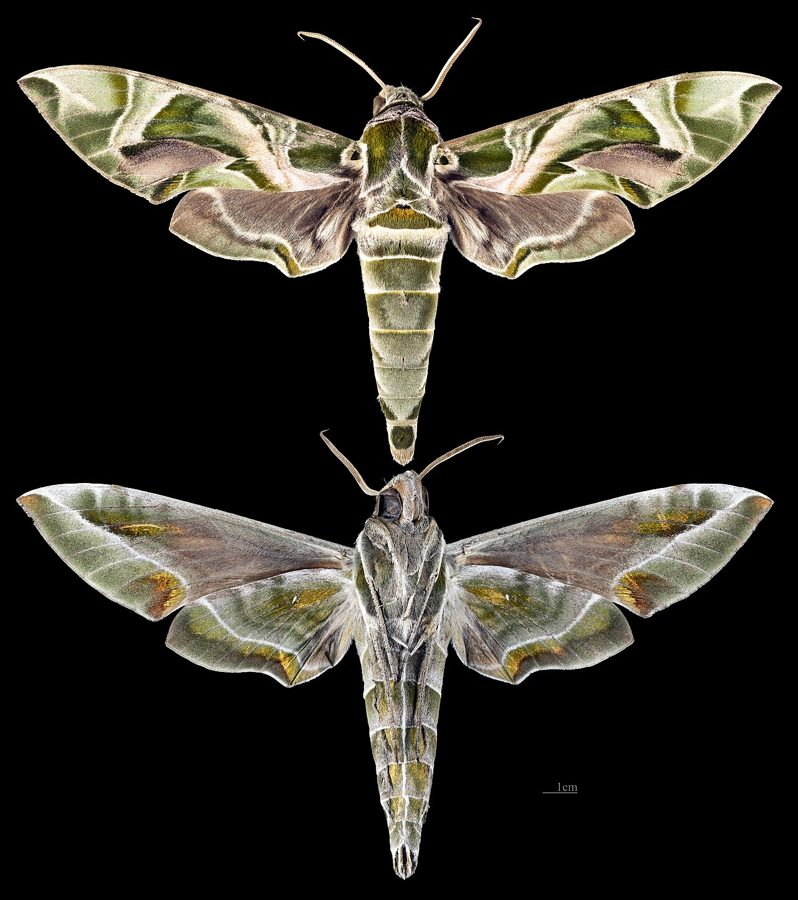

कनेर का पतंगाOleander Hawkmoth
Daphnis nerii · Sphingidae · INS-0066

- Scientific name
- Daphnis nerii (Linnaeus, 1758)
- Family
- Sphingidae
- Hindi
- कनेर का पतंगा
- Local names
- kaner ka patanga, kaner patanga, hara patanga, oleander hawkmoth
- Status here
- native
- IUCN
- not evaluated
- Review
- audited and independently read
When to look कब देखें
Present all year.
Uses and possibilities उपयोग और संभावनाएँ
Drawn from the documented uses in the profile below, where each is labelled traditional, current or a research lead. All uses →
कनेर का पतंगा / Oleander Hawkmoth
Daphnis nerii (Linnaeus, 1758) — Sphingidae
कनेर का पतंगा — पूर्वी उत्तर प्रदेश के बागों, पार्कों और सड़कों किनारे कनेर की झाड़ियों पर देखा जाने वाला एक बहुत बड़ा, शक्तिशाली और सुंदर तितली-जैसी रात की तितली (moth)। इसका शरीर मोटा, पेशीय, हरा होता है। इसके पंखों की लंबाई आठ-दस सेंटीमीटर। यह रात को आसमान में अकेले उड़ता है, पंखों की तेजी से बिना आवाज़ के। इसका कैटरपिलर बड़ा, हरा, चमकीला, जहरीले कनेर की पत्तियों को खाता है और ख़ुद भी जहरीला हो जाता है। यह तितली-मैं-कीट (insect) है, ड्रैगन-फ्लाई की तरह मँडराता है फूलों पर, बिना बैठे। भारत के सभी बागों का मेहमान।
Quick Identification त्वरित पहचान
| Feature | Description |
|---|---|
| Size | Large moth, wingspan 80-110 mm; one of the largest moths in the region |
| Colour | Predominantly soft green or grey-green with pink or reddish tones on the wings and thorax |
| Wings | Elongate and pointed; forewings with complex patterns of green, grey and pink |
| Body | Stout, muscular, greenish; thorax large and powerful |
| Proboscis | Long, thin, coiled under the head; unrolls to feed from flowers |
| Flight | Swift, hovering like a hummingbird; flies in daylight and at dusk |
Field tip: A large, heavy-bodied green moth hovering at flowers in evening light, or resting on foliage during the day. The long, coiled feeding tube and swift flight distinguish it from all butterflies. Often mistaken for a bird or bat when in flight at dusk.
हिंदी — कैसे पहचानें: बहुत बड़ी, हरी-गुलाबी तितली-जैसी रात की मक्खी। फूलों पर मँडराती है, बैठती नहीं। रात को तेजी से उड़ती है। सिर के नीचे एक लंबा पतला खाने की नली लुढ़की होती है।
Morphology आकारिकी
Biometrics (typical measurements for north Indian populations):
| Measurement | Range |
|---|---|
| Body length | 45-55 mm |
| Wingspan | 80-110 mm |
| Forewing length | 40-55 mm |
| Proboscis length | 45-60 mm |
Wings and body:
- Forewing: Elongate, pointed, soft green or grey-green with variable pink or reddish patches, especially near the margins. A characteristic eye-like marking (ocellus) may be present.
- Hindwing: Pale green or whitish with indistinct markings.
- Body: Powerfully built, thorax large and muscle-packed for hovering flight; abdomen moderately robust, green or pink-tinged.
Proboscis: The most distinctive feature: a long, thin, coiled tube, 45-60 mm long, which unrolls to penetrate deep into flowers for nectar. When not feeding, it is tightly coiled under the head.
Sexual dimorphism: Males have longer antennae than females, especially at the club. Females are typically larger.
Adaptations: The large eyes (typical of sphingids) provide excellent low-light vision. The powerful flight muscles allow sustained hovering.
Life Cycle / Phenology जीवन चक्र
| Stage / Month | Event |
|---|---|
| April–September | Main breeding season; females laying eggs on oleander leaves |
| Egg | Single egg laid on undersides of oleander leaves; hatches in 5-8 days |
| Larva | Caterpillar green, large (up to 80 mm), spotted, with a curved tail horn; 3-4 weeks to maturity |
| Pupa | Forms in soil beneath oleander plant; brown pupa; dormancy possible |
| Adult | Emerges in evening; lifespan 1-2 months; multiple generations per year |
| Year-round | Some individuals overwinter as pupae; emergence sporadic in cool months |
हिंदी: गर्मी में सबसे ज़्यादा; पत्तियों पर अंडे; कैटरपिलर हरा, बड़ा, पूँछ पर सींग; पाँच सप्ताह में पूरा। साल भर हो सकता है, लेकिन ठंड में कम।
Host Plants or Prey आहार
Larval host plant:
- Oleander (Nerium oleander) — the primary and preferred host plant.
- Occasionally reported on other Apocynaceae family plants, but rare.
Adult nectar sources:
- Wide range of flowering plants: Oleander (its own host), jasmine, petunias, datura, lantana, and various cultivated flowers.
- Flowers with tubular shapes suit the long proboscis.
- Night-blooming flowers.
Predators / Natural Enemies शत्रु
- Birds: Few birds prey on the toxic caterpillar; adults may be attacked by night birds or nocturnal raptors.
- Parasitoid wasps: Small wasps lay eggs in caterpillars, killing them.
- Spiders: Web-building spiders may entangle adults or caterpillars.
- Chemical defence: The caterpillar sequesters toxins from oleander, making it distasteful to most predators.
Agricultural / Human Relevance कृषि प्रासंगिकता
Oleander control and pollination.
- Pest status (minor): Caterpillars can defoliate oleander hedges when populations are high, though this is uncommon and usually tolerated.
- Pollination: Adult moths pollinate a variety of flowers while feeding, especially evening-blooming species.
- Ornamental interest: In some regions, the moth is valued for its dramatic appearance and is kept by enthusiasts.
Today. Abundant in gardens wherever oleander is grown; a familiar sight in parks and on roadsides. Generally considered harmless or beneficial.
Research direction (a lead, not a result). The genetic basis of the colour variation in north Indian populations (green vs. pink individuals) and seasonal colour changes would reveal environmental influences on moth pigmentation and could inform studies of climate adaptation in insects.
हिंदी: कनेर की झाड़ियों को कभी-कभी खा लेता है, पर इतना भी नहीं कि नुकसान हो। रात को फूलों का परागण करता है। कनेर का जहर इसे सुरक्षा देता है।
Expected Locally स्थानीय रूप से अपेक्षित
Not a field record. Written from published accounts for eastern Uttar Pradesh. No confirmed local sighting yet — if you have seen it, that is what the atlas needs.
अभी तक स्थानीय पुष्टि नहीं। यह विवरण प्रकाशित स्रोतों से है, किसी अवलोकन से नहीं।
To be expected in all gardens, parks, and wayside hedgerows throughout Basti district wherever oleander is planted. Most visible at dusk and during evening hours, especially from April to November. Watch for it hovering at flowers at dusk or sitting on foliage during the day.
Distribution वितरण
Global range: Africa, southern Europe, and Asia (from the Mediterranean east to India, Southeast Asia, and Australia). One of the most widely distributed hawkmoths.
In India: Distributed throughout the country, from lowlands to moderate elevations; wherever oleander is cultivated.
In Uttar Pradesh: Common in all gardens and parks; abundant in urban and rural areas alike.
In Basti district / eastern UP: Expected wherever oleander hedges are present, which is common in villages and along roads.
Research Questions शोध प्रश्न
Anyone can investigate these | कोई भी इन प्रश्नों की जाँच कर सकता है
- How many flowers can one Oleander Hawkmoth visit in a single evening? / एक कनेर पतंगा एक रात में कितने फूलों पर आता है? — Follow one moth for an hour and count flower visits.
- Which flowers are visited most frequently by this moth: oleander, jasmine, or datura? / किस फूल पर सबसे ज़्यादा आता है? — Set up flowers and record visits.
- How large does the caterpillar grow before it pupates? — Measure caterpillars at different stages of development.
- Do the colour variations (green vs. pink individuals) change with season? — Collect individuals throughout the year and compare colour.
- How can you locate the brown pupae in the soil under an oleander plant? — Dig carefully and collect pupae; keep records of pupation sites.
Similar Species मिलती-जुलती प्रजातियाँ
| Species | How to tell apart | हिंदी |
|---|---|---|
| Privet Hawkmoth (Sphinx ligustri) | Slightly smaller; greyish-brown, not green; darker markings; forewing with yellow-pink bands | मटमैली हॉकमॉथ — भूरी, हरी नहीं |
| Death's Head Hawkmoth (Acherontia sp.) | Much larger; brown with distinctive yellow markings and skull-like pattern on thorax; different ecology | खोपड़ी-मॉथ — भूरी, सिर पर निशान |
| Convolvulus Hawkmoth (Agrius convolvuli) | Smaller; brown-grey; different wing pattern; feeds on morning glory not oleander | मैदा मॉथ — और छोटी |
Field rule: A large, green or pink-tinged hawkmoth with a long coiled proboscis, hovering at flowers like a hummingbird, and found on oleander, is Daphnis nerii.
Taxonomy & Classification वर्गीकरण
Original description. Described by Linnaeus in 1758 in Systema Naturae, 10th edition, Vol. 1, p. 493. Type locality is Asia (India). The genus name Daphnis comes from Greek mythology. The specific name nerii refers to the Nerium (oleander) plant.
Subspecies. Multiple subspecies recognized. The Indian form is Daphnis nerii nerii (nominate).
Family and order placement. Order Lepidoptera, family Sphingidae (hawkmoths). The Sphingidae are powerful, fast-flying moths with robust bodies and elongate wings.
Phylogenetic notes. Daphnis is a monotypic genus (single species) within the hawkmoths, suggesting a specialized evolutionary history focused on oleander and related Apocynaceae.
IUCN status rationale. Not formally assessed. Abundant and widespread; no conservation concerns.
Photo Gallery फोटो गैलरी
No photos yet — add field photos to media/species/oleander_hawkmoth/ and run node scripts/sync_photos.js.
Wanted:
- Adult hovering at flower
- Adult at rest on foliage showing colour variation
- Large green caterpillar on oleander leaf
- Pupa in soil (if accessible)
References संदर्भ
- Linnaeus, C. (1758). Systema Naturae. 10th edition, Vol. 1, p. 493. [original description]
- Pittaway, A. R. (1993). The Hawkmoths of the Western Palaearctic. Entomographica, 3, 1-288. [comprehensive hawkmoth review]
- Datta, S. & Das, B. (1989). An illustrated account of Daphnis nerii (L.) from India. Indian Journal of Entomology, 51(2), 178-185.
- Kehimkar, I. D. (1994). Insect pollinators in Indian agroecosystems: A survey and recommendations. Indian Journal of Entomology, Supplement, 23-34.
- Nayar, K. K., Ananthakrishnan, T. N., & David, B. V. (1989). General and Applied Entomology. 2nd edition. McGraw-Hill, New Delhi.
- GBIF Occurrence Data — Daphnis nerii, India (2010-2025). GBIF taxon key: 7658999.
Source file: species/fauna/insects/oleander_hawkmoth.md